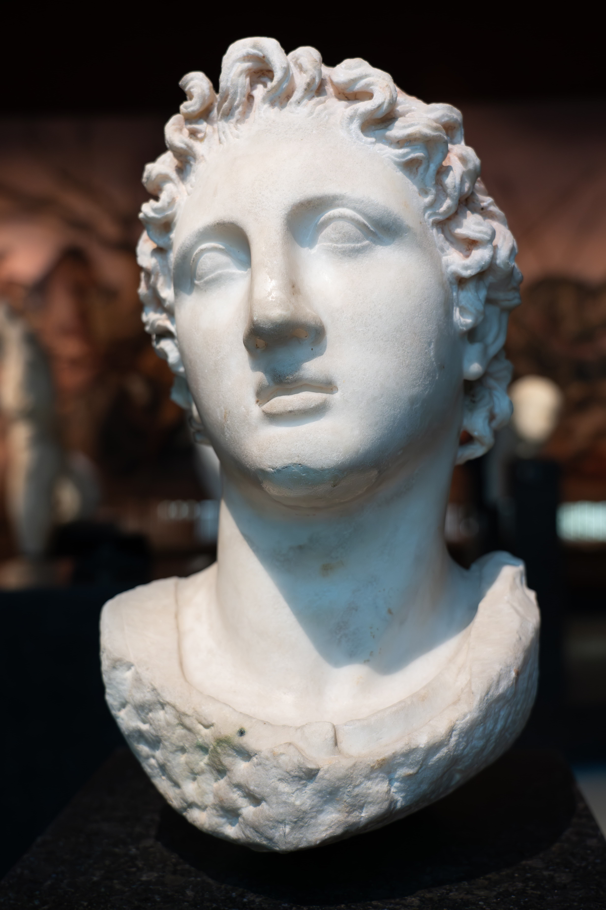
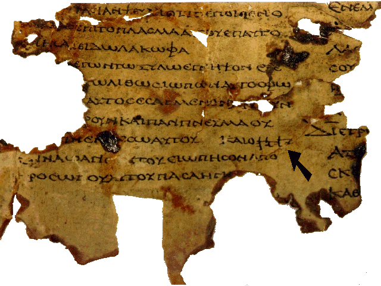

En una sola década, un joven macedonio conquistó el mundo conocido. Y con sus ejércitos llegó algo más duradero que cualquier imperio: la lengua, las ideas y la cultura griegas, que lo cambiarían todo.
Con esta serie el blog entra en su cuarta etapa y en un mundo nuevo. Hasta ahora, los imperios que moldearon a Israel venían del Cercano Oriente: Egipto, Mesopotamia, Persia. Pero en el 332 a.C. irrumpió algo distinto, procedente del oeste: el mundo griego, y tras él, Roma. No solo nuevos amos, sino una civilización entera —una forma de pensar, hablar y vivir— que penetraría hasta el tuétano del judaísmo y sería la cuna del cristianismo. Empieza con un conquistador de veinte años.
En el 334 a.C., Alejandro Magno, rey de Macedonia y discípulo de Aristóteles, cruzó a Asia con su ejército. En apenas una década barrió el Imperio Persa entero —el mismo coloso que había dominado a Judá durante dos siglos— y extendió su dominio desde Grecia hasta la India. Judea cayó bajo su control, casi sin resistencia, hacia el 332 a.C.
Alejandro murió jovencísimo, a los 32 años, sin heredero claro, y su imperio se fracturó entre sus generales. Pero su verdadera herencia no fue territorial. Fue cultural: allá donde llegó, fundó ciudades griegas, instaló administradores griegos e impuso el griego como lengua franca. A este proceso —la difusión de la cultura griega por todo el mundo antiguo— se le llama helenización, y sería la fuerza transformadora de los siguientes siglos.

Para el judaísmo, la helenización fue un terremoto, y ambivalente. Por un lado, ofrecía cosas seductoras: el griego como lengua internacional, la filosofía, el gimnasio, el teatro, una cultura urbana cosmopolita y prestigiosa. Muchos judíos, sobre todo las élites urbanas, la abrazaron con entusiasmo —adoptaron nombres griegos, costumbres griegas, la lengua griega—.
Por otro lado, esa misma seducción amenazaba la identidad judía. ¿Hasta dónde se podía ser griego sin dejar de ser judío? El gimnasio, por ejemplo, se practicaba desnudo, lo que hacía visible —y motivo de burla— la circuncisión. La tensión entre helenizarse o resistir partió a la sociedad judía en dos, y esa fractura estallaría, una generación después, en la revuelta que veremos en la próxima entrega.
El fruto más duradero de este encuentro fue un libro. En la Alejandría helenística, la gran comunidad judía de la diáspora había dejado de hablar hebreo: su lengua materna era ya el griego. Así que, a partir del siglo III a.C., se tradujo la Biblia hebrea al griego. Esa traducción se llama la Septuaginta (de la leyenda de que la hicieron setenta traductores).

La Septuaginta fue revolucionaria por dos razones. Primero, hizo la Biblia accesible al mundo entero, no solo a quienes leían hebreo. Segundo —y decisivo para la historia—, sería la Biblia de los primeros cristianos: cuando los autores del Nuevo Testamento citan las Escrituras, casi siempre citan la Septuaginta griega. Sin la helenización, el cristianismo no habría tenido la lengua ni el vehículo para expandirse por el Imperio. La conquista de Alejandro preparó, sin saberlo, el terreno.
Alejandro no solo conquistó territorios: difundió la lengua y la cultura griegas por todo el mundo antiguo. Esto obligó al judaísmo a decidir cuánto asimilarse. Un fruto clave fue la traducción de la Biblia al griego (la Septuaginta), que más tarde sería la Biblia de los primeros cristianos. El mundo griego preparó el escenario del cristianismo.
Alejandro fue un vecino imperial de nuevo tipo. Los imperios anteriores habían impuesto tributo, deportaciones, miedo. Grecia impuso algo más íntimo y más difícil de resistir: una cultura entera, atractiva y absorbente, que obligó al judaísmo a definirse frente a ella. De esa fricción salió tanto lo mejor (la Biblia universalizada en griego) como el conflicto más violento (la revuelta macabea).
Porque la helenización tenía un límite. Cuando un rey griego intentó no ya seducir, sino forzar a los judíos a abandonar su religión, la resistencia estalló. Ese es el tema de la próxima entrega: la rebelión de los Macabeos, y el nacimiento de una fiesta que aún se celebra.
La conquista de Alejandro (334–323 a.C.), la caída de Judea bajo dominio griego (332 a.C.) y el reparto posterior entre ptolomeos y seléucidas son hechos históricos firmes. La helenización como proceso cultural y sus tensiones dentro del judaísmo están bien documentadas por fuentes de la época.
La Septuaginta como traducción griega de la Biblia iniciada en el s. III a.C. en Alejandría, y su papel como Biblia de los primeros cristianos, son consenso académico. La leyenda de los "setenta traductores" (de la Carta de Aristeas) se menciona como origen del nombre, no como historia literal.
Este artículo describe historia cultural; el valor religioso de las Escrituras y su traducción es una cuestión distinta, que este blog respeta.